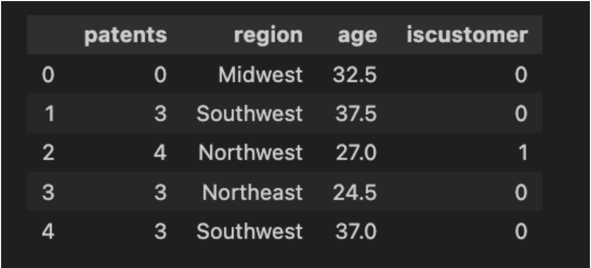
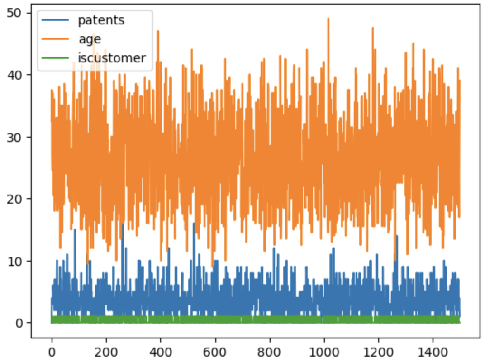
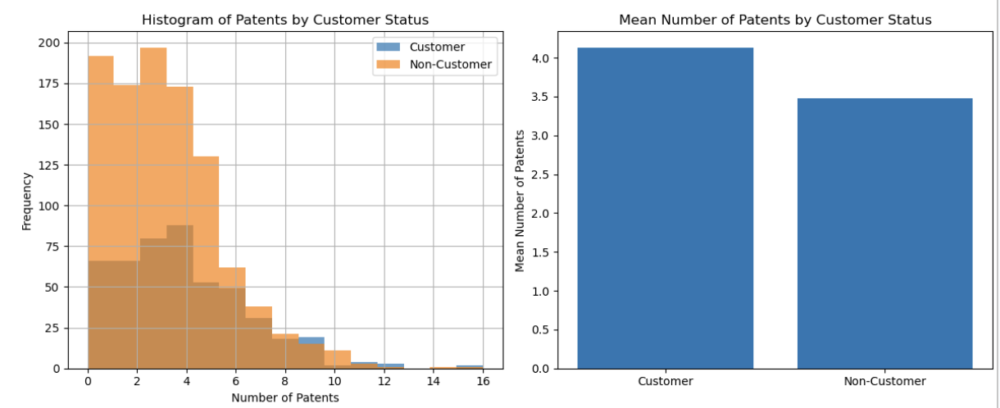
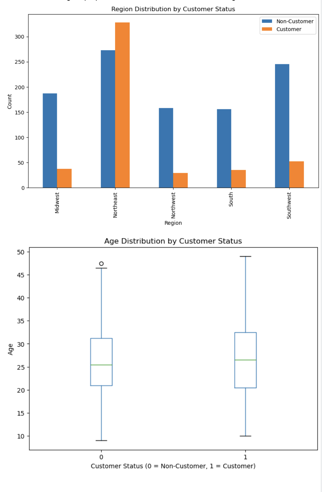
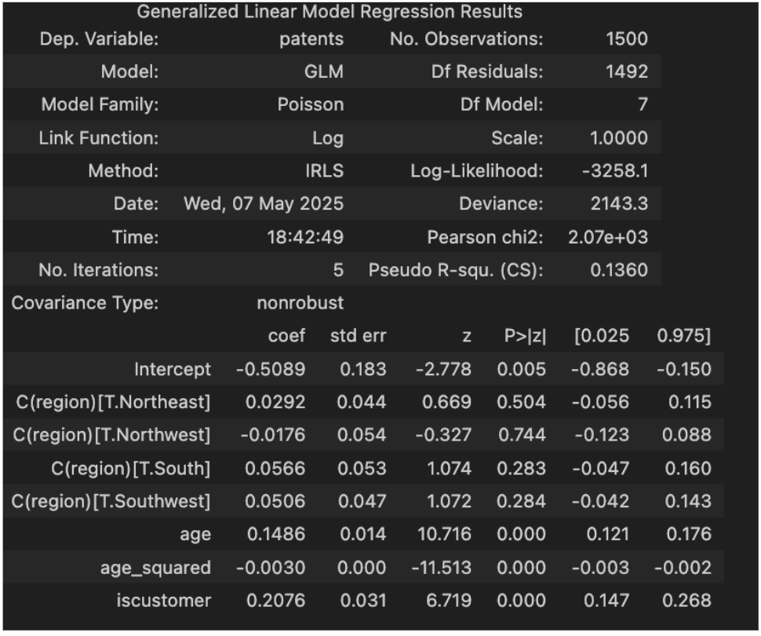
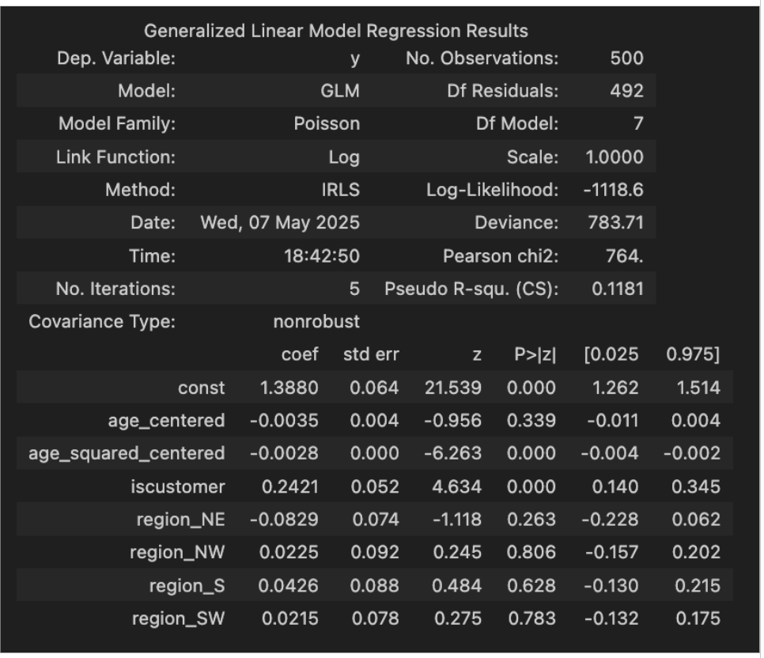
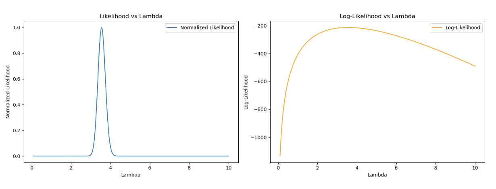
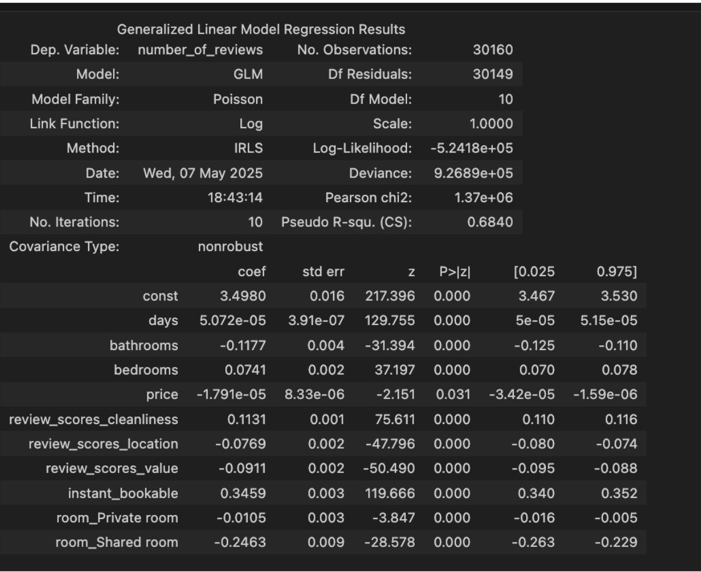

Understanding Poisson Regression Through Two Case Studies: Blueprinty and Airbnb
Poisson regression is a fundamental tool within the family of Generalized Linear Models (GLMs), particularly suited for modeling count data where the response variable represents counts that are non-negative integers. This model is used extensively across domains including healthcare, insurance, marketing analytics, and operations research. In this report, we apply Poisson regression to two real-world datasets to explore how it can uncover insights about business performance and customer behavior.
We begin with a case study involving a software company, Blueprinty, which claims its services help clients obtain more patent approvals. We then transition to an analysis of Airbnb listings in New York City, where we examine the factors that influence the number of reviews—a proxy for popularity or booking frequency. Each case study includes exploratory data analysis (EDA), model formulation, interpretation of results, and discussion of business implications.
Part 1: Blueprinty Case Study
Blueprinty is a software firm that provides digital tools to help engineering firms prepare and submit patent applications. Their marketing team believes that customers who use their software are more successful at getting patents approved. However, due to the lack of pre/post intervention data, our task is to assess whether customers differ from non-customers in patent outcomes, after controlling for observable firm characteristics. Specifically, we aim to build a Poisson regression model to predict the number of patents a firm holds, and test whether being a Blueprinty customer significantly predicts higher patent counts.

The dataset consists of 1,500 observations, each representing a firm. The key variables include:
patents: Count of patents awarded to each firm (target variable)
age: Age of the firm in years
region: Categorical variable indicating firm location (e.g., Northeast, Midwest, etc.)
iscustomer: Binary indicator (1 if the firm is a customer of Blueprinty, 0 otherwise)
We hypothesize that iscustomer will have a positive and significant coefficient in the Poisson model, after accounting for region and firm age.
Exploratory Data Analysis (EDA)

We began by plotting histograms of patent counts for customers and non-customers. These visualizations revealed that customers tend to have a higher number of patents.
We also created bar charts of mean patent counts by customer
status, which showed that Blueprinty customers have approximately 23%
more patents on average.

Next, we investigated whether customers differ systematically in
age or region. Boxplots revealed that customers are slightly older, and
contingency tables showed a higher proportion of customers in the
Northeast region.

The likelihood function is:
L(λ; Y₁, Y₂, ..., Yₙ) = Π f(Yᵢ | λ)
Using the Poisson PMF f(Y | λ) = (e^(-λ) * λ^Y) / Y!, the likelihood becomes:
L(λ; Y₁, Y₂, ..., Yₙ) = Π [(e^(-λ) * λ^(Yᵢ)) / Yᵢ!]
Simplify:
L(λ; Y₁, Y₂, ..., Yₙ) = e^(-nλ) * λ^(ΣYᵢ) * Π (1 / Yᵢ!)
Feature Engineering
We created a squared term age_squared to capture possible non-linear effects (e.g., diminishing or increasing returns to firm experience).
We dummy-coded the region variable to use in the model, with one region (e.g., Midwest) set as the reference group.
Modeling
We estimated this model using two approaches:
statsmodels.GLM() to fit a Poisson GLM
Custom log-likelihood function with scipy.optimize.minimize() to validate the MLE numerically
Interpretation of Results

The coefficient on iscustomer was 0.242, statistically significant (p < 0.001), suggesting that, on average, being a customer of Blueprinty increases a firm’s expected number of patents by approximately 27%.
The age_squared coefficient was negative and significant, indicating diminishing returns to age. Younger and mid-age firms saw stronger associations with higher patent counts than very old firms.
Regional dummy variables were not statistically significant, suggesting minimal geographic effects after controlling for age and customer status.
Conclusion
The analysis supports the claim that using Blueprinty is positively associated with higher patent counts, even after adjusting for firm age and location. However, since the data is observational and not randomized, this association should be interpreted with caution.
MLE for lambda: 3.55000003515202


This case study aims to understand what makes some Airbnb listings in New York City receive more reviews than others. We use the number of reviews as a proxy for bookings and overall popularity. Our goal is to model this count outcome using a Poisson regression framework and evaluate which features of a listing (e.g., room type, cleanliness, price) are most predictive of review volume.
The dataset includes over 40,000 listings scraped from Airbnb’s website. Key variables include:
number_of_reviews: Target variable representing review count
days: Number of days the listing has been active
bathrooms, bedrooms: Numeric features describing the unit
price: Price per night
review_scores_cleanliness, review_scores_location, review_scores_value: Ratings on a 1–10 scale
room_type: Categorical variable (entire home, private room, shared room)
instant_bookable: Binary variable (1 if booking does not require host approval)
Data Cleaning and EDA
We removed observations with missing values in key review score fields to ensure model quality.
Room type was encoded using dummy variables. Instant booking was converted to binary format.
Histograms and bar plots were used to inspect distributions and means of review counts by room type, bookability, and price. Listings that were instantly bookable and those rated higher in cleanliness tended to have more reviews.
Model Specification
All predictors were standardized where appropriate. statsmodels.GLM() was used for estimation.
Key Results

instant_bookable: Coefficient of 0.346 (p < 0.001). Listings that were instantly bookable received approximately 41% more reviews.
review_scores_cleanliness: Positive and highly significant, indicating cleanliness perception is strongly associated with more reviews.
room_type: Shared rooms received significantly fewer reviews than entire homes, likely reflecting lower demand.
price: Had a small negative effect on reviews, suggesting price sensitivity.
days: A small positive effect, as older listings naturally accumulate more reviews over time.
Conclusion
The model effectively identifies key drivers of listing popularity. Host-controlled factors like cleanliness, booking ease, and accurate pricing are shown to significantly affect listing performance.
This insight can be used by hosts to optimize listing features to maximize guest engagement and visibility.
(Insert coefficient table and illustrative boxplots of room types vs. review counts here)
Poisson regression proves to be a versatile and interpretable approach to modeling count-based outcomes. In both case studies, we demonstrate how thoughtful feature engineering and domain knowledge can improve model relevance and explanatory power. In the Blueprinty case, Poisson regression supported a key business claim. In the Airbnb case, it provided actionable insights for host behavior and platform design.
Future work could include testing for overdispersion, comparing models (e.g., negative binomial), or incorporating time-series elements. Despite its assumptions, Poisson regression remains a critical tool for applied analytics and business modeling.
Code and Implementation: All models and visualizations were implemented in Python using pandas, numpy, matplotlib, and statsmodels.
Custom MLE Functions: Log-likelihood functions were written from scratch to verify GLM outputs and provide learning-by-doing experience with numerical optimization.
Source File: The complete annotated analysis can be found in the accompanying HTML notebook (Analysis2.html), which includes all plots, model output, and code used in this report.